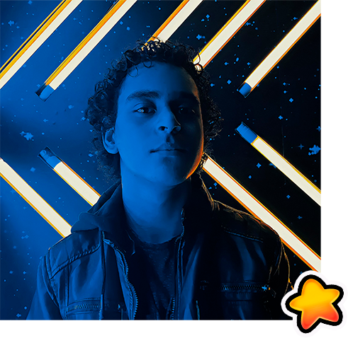
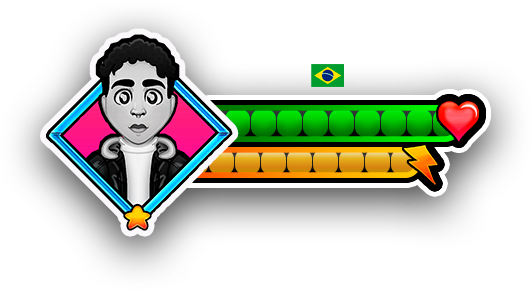
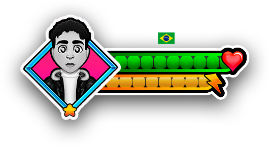
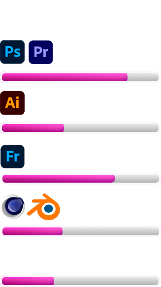
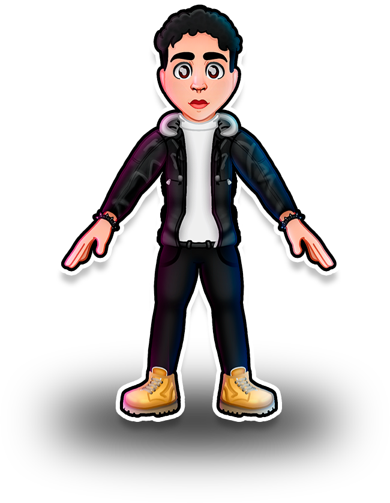

Oi, eu sou Christian Coelho!
Sou de São Paulo, Brasil. Trabalho como Game Artist e Designer freelancer. Já colaborei com alguns jogos nacionais com artes conceituais, props e dublagem.
Tenho bastante interesse na área de criação de jogos digitais, animação e tecnologia imersivas.
No momento estou cursando Técnico de Multimídia no Senac e Audiovisual na Escola Saga.
Tenho conhecimentos avançados no pacote Office e intermediários nos programas Adobe (Photoshop, Illustrator, Fresco e Premiere).
Almejo ganhar experiência na área de jogos e criar histórias que motivem os jogares ao redor do mundo.
Obrigado por visitar e espero que possamos criar algo juntos!💙
Sinta-se à vontade em entrar em contato comigo em: Christiancoelhoart@gmail.com
 



